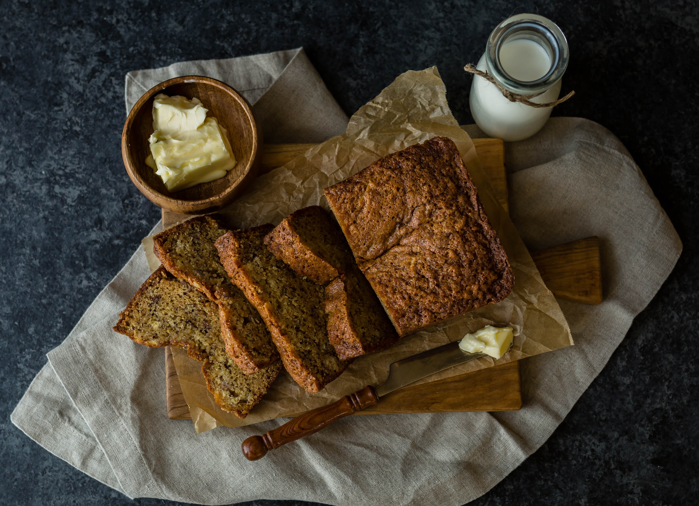

Banana Bread

Dense and sweet with a tender crumb and deep banana flavor, this quick
bread recipe is a keeper!
Everyone needs a go-to banana bread recipe to use up those overripe
bananas languishing on the counter. Here's one that you will use again and
again!
With just a few simple ingredients, you can have a delicious banana bread
ready in just over an hour. This recipe also freezes well! Just wrap the
banana bread in plastic wrap with foil on the outside, and it will stay
good for up to 3 months frozen.
Ingredients
- 2¼ cups all-purpose flour
- 1 cup sugar
- 1 tsp baking soda
- ½ tsp salt
- 3 very ripe bananas
- ½ cup unsalted butter, melted
- 2 large eggs, lightly beaten
- ⅓ cup plain yogurt
- 1 tsp vanilla extract
- 1 cup chopped walnuts (optional)
Steps
- Preheat the oven to 350°F (180°C)
-
Butter a 9x5 inch loaf pan, then dust with flour, tapping out the
excess.
- In a bowl, stir together flour, sugar, baking soda and salt.
-
In a large bowl, mash the bananas with a fork. Add the melted butter,
eggs, yogurt and vanilla and stir until blended.
-
Add the flour mixture gradually to the bowl with the banana mixture,
stirring gently until just combined. Stir in half the walnuts, if using.
-
Scrape the batter into the prepared pan. Sprinkle the remaining walnuts
on top, if using.
-
Bake until a toothpick inserted in the center of the loaf comes out
clean, about 1 hour. If the top begins to brown too much, cover the loaf
loosely with aluminum foil.
-
Let cool for 10 minutes, then turn the loaf out and let cool completely.
- Cut loaf into slices and serve.
Home